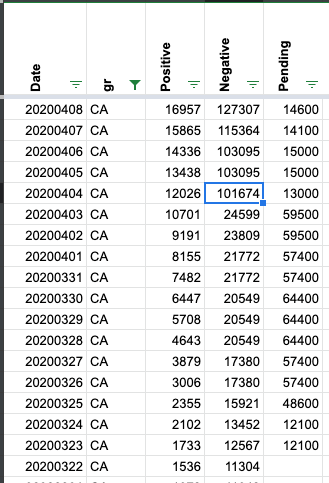

California testing data error
Issue number 166
rashecl opened this issue on April 7, 2020 at 6:10 pm
On April 4th, there were 78400 new test results in CA, and that number seems very high since other days there were <3000. Also, I created a GUI here: http://predict.rocks/state_of_the_union Using this, I’ve found potential issues Montana and Wisconsin as well.
careeningspace commented on April 9, 2020 at 9:52 am
@una-smith is correct - California finally pushed a bunch of backlogged data on the 4th. 
careeningspace closed the issue on April 9, 2020 at 9:52 am
CA simply reported its backlog of pending tests. As discussed in other issues here, positives and negatives are reported in separate data streams and in some states the negatives are reported in batches weekly. Backlogs affect negatives more than positives.